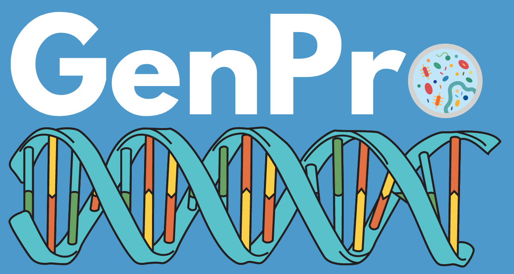

<article>
<p align="center"> En el presente curso se estudiarán la teoría y práctica de diferentes técnicas bioinformáticas utilizadas para el análisis de datos genéticos y genómicos en procariontes. El creciente ritmo de producción de este tipo de datos, en términos de volumen, velocidad y variedad, obliga a los biólogos de hoy en día a disponer de herramientas para poder accederlos, manipularlos y analizarlos, con el fin de transformarlos en conocimiento útil. Este curso tratará de proveer los conocimientos y herramientas para lograrlo, representando nueva opción académica altamente especializada que contribuirá a ampliar la formación de los estudiantes en un tema estratégico de la biología moderna como lo es la genómica. Se proporciona una formación tanto teórica como práctica en temas como los siguientes: Bases de datos biológicas, filogenética, metabarcoding, ensamblaje y anotación de genomas, filogenómica y genómica comparativa.
</p>
</article>
  <html>
  
    
</html>

